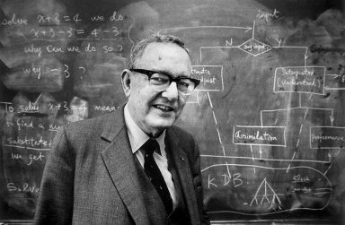
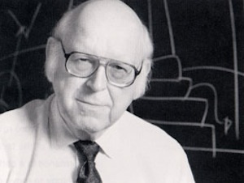
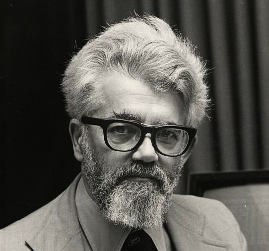

O que é?
A inteligência artificial é um ramo de pesquisa da ciência da computação que busca, através de símbolos computacionais, construir mecanismos e/ou dispositivos que simulem a capacidade do ser humano de pensar, resolver problemas, ou seja, de ser inteligente.
Como surgiu?
O estudo e desenvolvimento desse ramo de pesquisa tiveram início após a Segunda Guerra Mundial, nos anos 50. Os principais idealizadores foram os seguintes cientistas: Hebert Simon, Allen Newell, Jonh McCarthy e vários outros na Universidade de Cargenie Mellon, que com objetivos em comum tinham a intenção de criar um “ser” que simulasse a vida do ser humano.
Os Principais idealizadores da Inteligência artificial eram:
- Hebert Simon;
- Allen Newell
- Jonh McCarthy
- Hebert Simon:

- Herbert Alexander Simon (Milwaukee, 15 de junho de 1916 — Pittsburgh, 9 de fevereiro de 2001) foi um economista estadunidense.
Foi agraciado com o Prémio de Ciências Económicas em Memória de Alfred Nobel de 1978. Foi um pesquisador nos campos de psicologia cognitiva,
informática, administração pública, sociologia económica, e filosofia. Por vezes, descreveram-no como um polímata.
- Allen Newell:

- Allen Newell (São Francisco, 19 de março de 1927 — Pittsburgh, 19 de julho de 1992) foi um pesquisador da ciência da computação
e psicólogo cognitivo estadunidense formado na RAND Corporation e na Faculdade de Ciência da Computação, Tepper School of Business,
e do Departamento de Psicologia da Universidade Carnegie Mellon. Ele contribuiu para a linguagem de processamento de informação (1956)
e dois dos primeiros programas de inteligência artificial, a Logic Theorist (1956) e o General Problem Solver (1957) (com Herbert Simon).
Foi galhardoado com um prêmio Turing pela Associação para Maquinaria da Computação junto com Herbert Simon, em 1975, por suas contribuições
fundamentais para a inteligência artificial e a psicologia da cognição humana.
- Jonh McCarthy:

- John McCarthy (Boston, 4 de setembro de 1927 — Stanford, Califórnia, 23 de outubro de 2011) foi um cientista da computação estadunidense.
Conhecido pelos estudos no campo da inteligência artificial e por ser o criador da linguagem de programação Lisp. Recebeu o Prêmio Turing de 1972
e a Medalha Nacional de Ciências dos Estados Unidos de 1991.